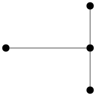
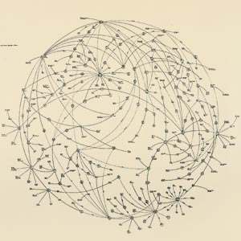
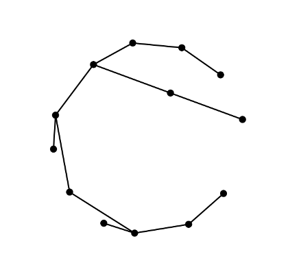

mjhmathblog
mjhmathblog
Categories
All
(21)
combinatorics
(1)
gephi
(1)
graph-drawing
(1)
graph-theory
(20)
networkx
(1)
python
(1)
Generating Examples of Maximal Room Squares in R
combinatorics
A
Room square
of order
\(n\)
and side
\(n − 1\)
on an
\(n\)
‐element set
\(S\)
is an
\(n - 1 \times n - 1\)
array filled with
\(n\)
different symbols in such a way that:
May 4, 2023
Matthew Henderson
Euler Paths
graph-theory
One of the oldest problems in graph theory concerns the Eastern Prussia old city of Königsberg. In that city was an island around which the river Pregel flowed in two…
Oct 17, 2014
Matthew Henderson
Greedy Edge Colouring of Small Graphs
graph-theory
In seveal earlier posts we looked at greedy vertex-colouring of small graphs. As we saw, a greedy approach to vertex-colouring is quite successful in so far as it uses at…
Sep 26, 2014
Matthew Henderson
More on Moore Graphs
graph-theory
In Small Moore Graphs we developed
moore
, a filter for Moore graphs in
graph6
format. The virtue of a program like
moore
is that it can be used in pipelines with existing…
Sep 12, 2014
Matthew Henderson

Chromatic Indices of Small Graphs
graph-theory
In this post we compute the chromatic index of all graphs on at most nine vertices with ten edges or fewer.
Aug 29, 2014
Matthew Henderson
Small Moore Graphs
graph-theory
With
geng
we can generate graphs in
graph6
format. For example, to generate all connected simple graphs of order four:
Aug 22, 2014
Matthew Henderson
Colouring Small Regular Graphs
graph-theory
In this post we present two tables of data on chromatic numbers of [regular graphs][def:regular-graph]. Both tables give chromatic numbers of simple graphs on at most ten…
Aug 15, 2014
Matthew Henderson
Colouring Small Graphs: Update
graph-theory
In Colouring Small Graphs we attempted to reproduce Gordon Royle’s data on the distribution of chromatic numbers of small graphs. We were partially successful, reproducing…
Aug 8, 2014
Matthew Henderson
Colouring Small Graphs
graph-theory
In Chromatic Polynomials we showed how to partially reproduce the data on small graph colourings made available by Gordon Royle. In that post we used NetworkX, sympy and the
…
Jul 25, 2014
Matthew Henderson
A Chromatic Number Program
graph-theory
The chromatic polynomial
\(\chi(G, \lambda)\)
allows us to determine the chromatic number of
\(G\)
as
\(\chi(G) = \min\{\lambda \in \{1,\ldots,\Delta(G) + 1\}\,|\, \chi(G…
Jul 18, 2014
Matthew Henderson
Chromatic Polynomials
graph-theory
Until now we have considered two different simple methods for colouring vertices of graphs. Greedy colouring and recursive removal of independent subgraphs. Neither of which…
Jul 11, 2014
Matthew Henderson
Vertex Colouring by Recursive Removal of Independent Sets of Vertices
graph-theory
The previous two posts were about greedy colouring small graphs. In the first post an implementation of the greedy algorithm in Python with NetworkX was used to colour all…
Jul 4, 2014
Matthew Henderson
Improved Greedy Colouring of Small Graphs
graph-theory
In the previous post we conducted a small experiment to compare the total number of colours used by the greedy vertex colouring algorithm on a collection of small graphs.…
Jun 27, 2014
Matthew Henderson
Strategies for Greedy Vertex Colouring
graph-theory
In the previous post we showed that a greedy vertex colouring of a graph
\(G\)
uses at most
\(\Delta(G) + 1\)
colours. This sounds good until we realise that graphs can have…
Jun 20, 2014
Matthew Henderson
Greedy Vertex Colouring
graph-theory
In this post we demonstrate some of the basic ideas of vertex colouring. In particular, we demonstrate the following result.
Jun 13, 2014
Matthew Henderson
Processing Graph Streams
graph-theory
In this post we introduce
gvpr
a graph stream editor which belongs to the Graphviz software library. As this is our first post about Graphviz and
gvpr
is, perhaps, not the…
Jun 6, 2014
Matthew Henderson
Drawing Coloured Queen Graphs
graph-theory
Continuing from last week’s post, in this post we will demonstrate how to use the
osage
program from Graphviz, to create rectangular drawings of coloured queen graphs. The…
May 30, 2014
Matthew Henderson
Introduction to Greedy Colouring
graph-theory
In the post we discuss Joseph Culberson’s Graph Colouring Programs, a collection of C programs which can be downloaded from Culberson’s Graph Colouring Page.
May 23, 2014
Matthew Henderson

Lombardi Drawings
graph-theory
Mark Lombardi (1951–2000) was an American artist whose network diagrams, like the one below, reveal close connections between actors in the domains of international politics…
May 9, 2014
Matthew Henderson
Basic Graph Drawing
graph-theory
Graph drawing in NetworkX is primarily handled by the
draw
function. Layouts are generated through functions like
circular_layout
and
spring_layout
, providing coordinate…
May 2, 2014
Matthew Henderson

Plane Drawings of Lobsters
graph-theory
graph-drawing
python
networkx
gephi
In this post we demonstrate how to use Gephi to find a nice drawing of a graph with hundreds of vertices.
Apr 25, 2014
Matthew Henderson
No matching items